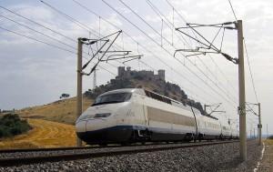
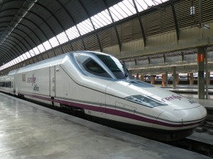
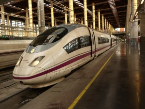

Los trenes de alta velocidad pueden ser de ancho fijo internacional (1.435 mm) y de ancho variable internacional/ibérico (1.668 mm). Los de ancho fijo son en su práctica totalidad monotensión y están alimentados a 25.000 V 50Hz, la tensión empleada en las líneas de alta velocidad. . La única excepción de tren de ancho fijo bitensión son los AVE que van a Francia. Por su parte, los de ancho variable son todos bitensión y pueden alimentarse también a 3.000 V cc.
La tienda ferroviaria 15% de descuento
El número de la serie de los trenes de alta velocidad se suele leer tal cual es el número. Por ejemplo, el 100 es el cien y el 130 es el ciento treinta. Dentro de esta categoría no sólo entran los denominados AVE, que son los que prestan este servicio comercial de Renfe. También se incluyen los que prestan los servicios AV City, Avant y Alvia.
Renfe no bajará más el precio del AVE AVE serie 100-018 a los pies de un castillo. Autor: Fedekuki
Los trenes de la serie 100 de Renfe fueron los primeros AVE y trenes de alta velocidad que circularon en España. Fabricados por GEC Alsthom (ahora Alstom) junto a otras empresas, marcaron un antes y un después en el ferrocarril español. Durante muchos años fueron el buque insignia de Renfe ya que era el más moderno de todos sus trenes.
En total son 24 unidades de ancho internacional, 6 de las cuales formaron en su momento la serie 101 en ancho ibérico para los servicios Euromed. Esas mismas 6 unidades son las que se han adaptado para su circulación en Francia por lo que son las únicas bitensión que pueden circular con 1.500 V cc. El resto son todas monotensión a 25.000 V 50 Hz, si bien en su día usaban los 3.000 V cc para los entornos de las estaciones. Cada tren está formado por 8 coches articulados con tracción concentrada. Es decir, tiene dos locomotoras fijas en sus extremos llamadas cabezas tractoras.
Su velocidad máxima es de 300 km/h y pueden transportar a 347 personas. Sus rutas más habituales son Madrid-Sevilla, Madrid-Alicante, Madrid-Barcelona-Marsella, Barcelona-Lyon y Barcelona-Toulouse.
Renfe ofrecerá descuentos en el AVE de hasta el 70% Renfe AVE 102-005 en la estación de Santa Justa. Foto: Savh.
La hegemonía de los serie 100 se vio interrumpida en 2001, con la entrada en servicio del primero de los Talgo 350 perteneciente a la serie 102. Bajo el pseudónimo de Pato, debido a su característico frontal, son el primer tren de alta velocidad de Talgo y también el primero de sus trenes eléctricos autopropulsados.
La serie está compuesta de 16 trenes de 12 coches cada uno, con tracción concentrada. Todas ellas son monotensión a 25.000V 50 Hz y tienen una velocidad comercial máxima de 330 km/h. Aunque fueron adquiridos inicialmente para prestar servicio en la LAV Madrid-Barcelona-Frontera francesa, no es habitual verles por esa línea.
Los billetes de AVE serán más baratos a partir del 9 de febrero. Foto: Miguel Bustos. Un Velaro estacionado en Puerta de Atocha. Foto: Miguel Bustos.
La tercera generación de trenes AVE se trata de la serie 103, una versión mejorada del ICE 3 alemán desarrollada íntegramente por Siemens.
Reciben el nombre Velaro pues es el que la firma alemana usa para la familia de trenes derivados del ICE 3. El modelo original había sido desarrollado junto con AdTranz, pero cuando la compró Bombardier Siemens dejó de tener acceso a su tecnología. Con 350 km/h de velocidad máxima comercial, actualmente es el tren más veloz de Renfe.
En total existen 26 unidades monotensión a 25.000 V 50 Hz y de ancho fijo. Son los únicos trenes eléctricos de Renfe que superan los 250 km/h que cuenta con tracción distribuida; característica que les permite aprovechar más el espacio en sus 8 coches. Con 404 plazas sentadas, son los trenes de largo recorrido con mayor capacidad.
FIN